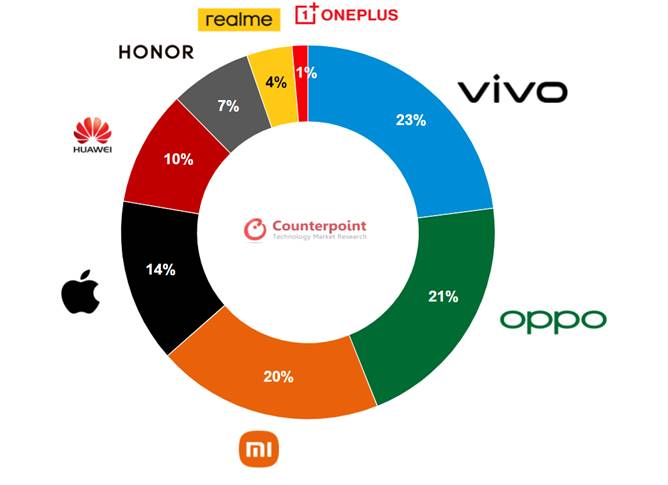

1. Comportamiento de Datos de Ventas de OPPO
He aprendido a analizar y comprender los patrones de venta de los productos de OPPO. Esta habilidad me permite identificar tendencias, prever demandas futuras y optimizar estrategias de ventas para maximizar el rendimiento.

2. Comportamiento de Capas y Market Share
He adquirido conocimientos profundos sobre cómo calcular y analizar la participación de mercado. A continuación, te presento los pasos para calcular el market share:
¿Cómo calcular la participación de mercado en 4 pasos?
a. Determinar la unidad de medición
Fijar una unidad de medida facilita la recolección e interpretación de los datos y provee información más precisa sobre el panorama competitivo. Este paso es crucial para obtener datos coherentes y comparables.
b. Definir la totalidad del mercado
Conocer la industria y la competencia es fundamental. Se requiere identificar a los competidores y distinguir entre competidores directos e indirectos. La información puede obtenerse de estudios de marketing, estadísticas públicas y reportes gubernamentales.
c. Aplicar la fórmula de participación en el mercado
La fórmula para calcular la tasa de participación en el mercado es:
Tasa de participación en el mercado = Ventas de la empresa / Ventas totales del mercado
Por ejemplo, si una empresa vende 25,000 unidades y el total de ventas del mercado es 80,000 unidades, la participación en el mercado sería del 31.25%.
d. Analizar la información y tomar decisiones
Conocer el panorama competitivo permite tomar decisiones estratégicas para incrementar la participación de mercado. Estas estrategias deben ser monitoreadas para evaluar su efectividad y ajustar las tácticas según sea necesario.
3. Automatizaciones en Excel
He estado trabajando en la automatización de procesos en Excel para mejorar la eficiencia y reducir errores. Estas automatizaciones incluyen:
- Uso de fórmulas avanzadas para análisis de datos.
- Creación de macros para tareas repetitivas.
- Integración de datos de múltiples fuentes para análisis más completos.
Estos avances han permitido ahorrar tiempo y asegurar la precisión de los datos analizados.

4. Futuras Presentaciones en Power BI
Power BI es una herramienta poderosa para la visualización interactiva de datos. Planeo utilizar Power BI para crear dashboards dinámicos que permitan una comprensión más rápida y profunda de la información. Las ventajas de Power BI incluyen:
- Visualización interactiva: Facilita la exploración de datos a través de gráficos y visualizaciones dinámicas.
- Conectividad a múltiples fuentes de datos: Permite integrar datos de diversas fuentes en un solo dashboard.
- Análisis en tiempo real: Proporciona actualizaciones instantáneas de los datos, permitiendo decisiones informadas de manera rápida.
Implementar Power BI ayudará a presentar la información de una manera más atractiva y comprensible, mejorando la toma de decisiones estratégicas en la empresa.
Contacto
Si tienes alguna pregunta o deseas más información, no dudes en contactarme.